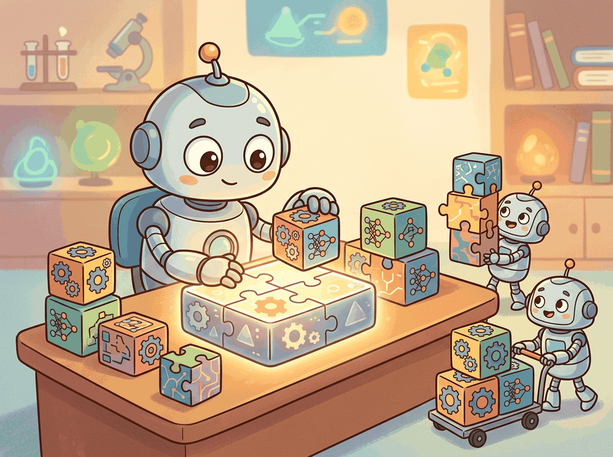

"Every expert was once a beginner who refused to skip the fundamentals."
Tensor, Fundamentals-Obsessed AI Agent

This is where the book begins. You arrive with Python, curiosity, and (we assume) some prior exposure to machine learning. Everything before this chapter is the front matter that told you what the book covers, who it is for, and how to read it. From here on, every chapter builds: by the end of Part I you will have written a working Transformer; by the end of the book you will have shipped an agent into production.
Chapter Overview
This chapter is your launchpad. Before we can understand how Large Language Models work, we need to build a solid foundation in machine learning, neural networks, and the tools we will use throughout the book. Think of this chapter as ensuring everyone speaks the same language before the real journey begins, from NLP fundamentals (Chapter 01) all the way through to building AI agents (Chapter 26).
We start with the core ideas of machine learning: how machines learn patterns from data, what can go wrong (overfitting), and how to fix it. Then we dive into neural networks and the magic of backpropagation, concepts you will see again when we study the Transformer architecture (Chapter 04). Next, we get our hands dirty with PyTorch, the framework that powers most modern LLM research and development. Finally, we introduce reinforcement learning, the paradigm that makes LLMs helpful through RLHF, a topic explored in full in Chapter 20: Alignment, RLHF & DPO.
PyTorch is the lingua franca of modern LLM engineering. Nearly every model you will use in this book was trained in it, every fine-tuning library wraps it, and every production inference server can ingest its checkpoints. This chapter brings classical ML and PyTorch under one roof so that subsequent chapters can focus on what makes LLMs different rather than re-explaining backpropagation. The investment pays off across every Part that follows.
- Explain supervised learning, loss functions, and gradient descent intuitively and mathematically (these resurface in Chapter 18: Fine-Tuning Fundamentals)
- Describe the bias-variance tradeoff and apply regularization techniques
- Build and train neural networks, understanding backpropagation at a mechanical level
- Write complete PyTorch training loops with custom datasets and GPU acceleration, skills applied throughout Part 4: Training & Adapting
- Explain the RL framework (agent, policy, reward) and its connection to LLM training via RLHF and DPO (Chapter 20)
- Python proficiency (functions, classes, list comprehensions, decorators)
- Basic linear algebra: vectors, matrices, dot products
- Basic probability: distributions, expectation, Bayes' theorem
- No prior ML experience required
Sections
- 0.1 What Every LLM Engineer Needs From Classical ML Why do we need ML basics for an LLM book?
- 0.2 Deep Learning Essentials This section builds directly on the ML fundamentals covered in Section 0.1: ML Basics, particularly cross-entropy, loss functions, and the bias-variance tradeoff.
- 0.3 PyTorch in 90 Minutes: Tensors to Training Loop PyTorch is the language we will use to build, train, and understand LLMs throughout this book.
- 0.4 Reinforcement Learning Foundations Why RL in an LLM book?
What's Next?
In the next section, Section 0.1: ML Basics: Features, Optimization & Generalization, we begin with the core machine learning concepts (features, optimization, and generalization) that underpin every large language model.